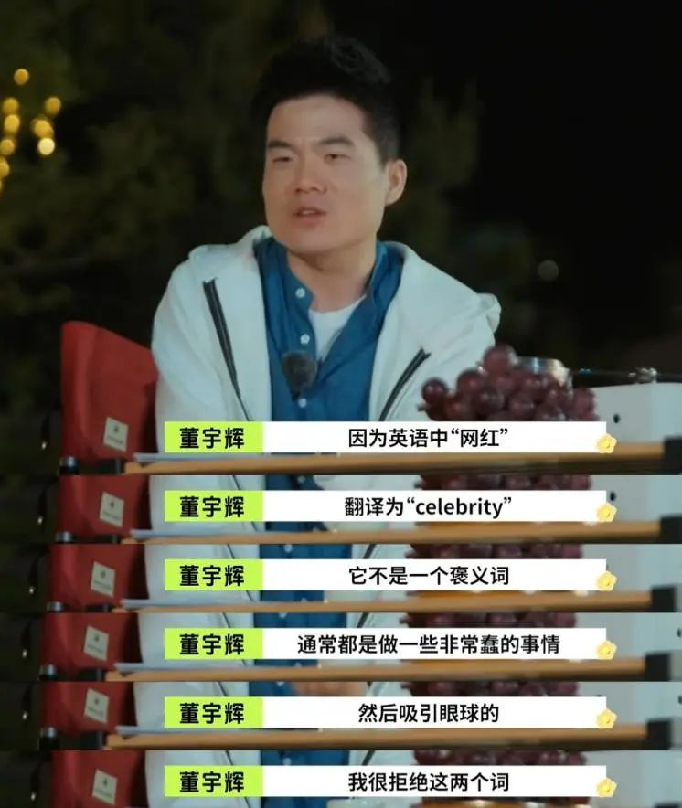
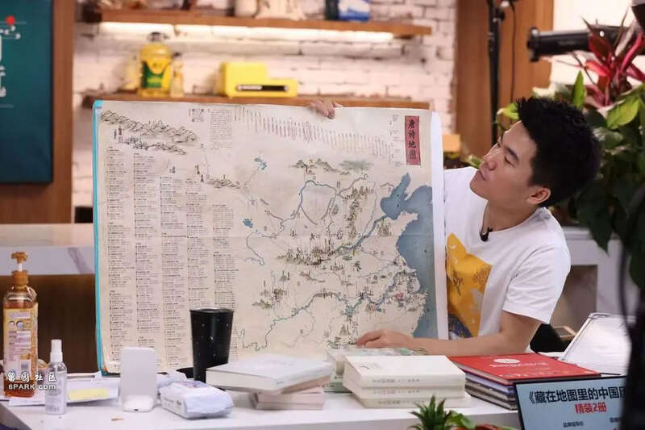
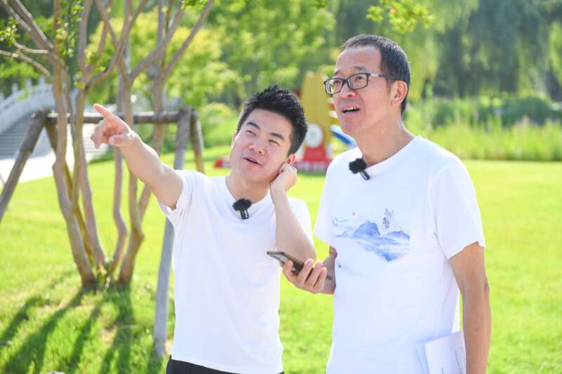

董宇辉跌落神坛，可以开始倒计时了。在抖音的平台上，从来都是铁打的抖音，流水的网红。从董宇辉与东方甄选分家开始，董宇辉的网红生涯也就进入倒计时了。为什么这么说呢？因为作为一个抖音网红，董宇辉的网红生命周期已经远远超过其他网红了，比罗永浩、代古拉K、广东夫妇、刘畊宏、郭有才、小杨哥等抖音顶流网红，都要更为持久。

正常来说，抖音网红的生命周期大约就是半年到一年之间。但董宇辉已经红了超过一年了，这不是抖音想要看到的。抖音对头部网红，有天然的排斥性。为什么要排斥头部网红？主要原因就是：淘宝、快手都吃过头部网红的亏，抖音不想重蹈覆辙。
比如，淘宝平台上的李佳琪、薇娅，都曾红极一时。可这两位头部网红的存在，也基本垄断了淘宝的流量。李佳琪、薇娅一开播，就是上千万用户蹲守，这就导致其他店铺的直播间，严重缺乏流量，甚至都没人了。
这种超级头部网红，对流量的虹吸效应，严重破坏了电商平台的原有生态。快手也曾被辛巴家族所绑架，双方多次因为流量冲突而隔空互怼，辛巴也被多次封号。抖音不想被头部网红所绑架，因此，作为后起之秀，抖音软件在设计的时候，就制定了一套网红淘汰机制。你可以突然爆红，但这个爆红的时间不会太长，属于是让你赚一波，就走，再扶持新的头部网红，让更多的人参与分蛋糕，形成良性循环。
像抖音捧红的第一个头部主播，就是罗永浩。罗永浩之后，还捧红了刘畊宏，广东夫妇、小杨哥等，董宇辉已经是抖音平台上第四代、第五代头部主播了。
但为了避免流量被某个头部主播所垄断，反向破坏平台的流量生态，抖音会主动对其降权，减少推流。这不是突然而至的，而是缓慢消失的。具体的操作就是，让董宇辉的流量一点点减少，慢慢地这个人在抖音上，就不红了。等大家意识到时，他已经不红了，无法对舆论形成巨大的引力了。
在这个过程中，还会逐渐出现越来越多的，关于董宇辉的负面新闻。正所谓，人红是非多。作为一个头部主播，粉丝多，犯错的机会也多。只要他是人，就一定会犯错。他一犯错，舆论就会被迅速放大。像最近的巴黎奥运会，董宇辉就去了巴黎，参观法国卢浮宫。在自己的视频中搭配文案时，就写道：“众神归位。”
可只要念过书的人都知道，卢浮宫里的很多文物，都是偷来的，抢来的，不属于法国。这种“众神归位”的描述，极大地伤害了中国人的民族情感。一夜之间，就出现了大量网友，开始质疑董宇辉的真实文化水平。
事实上，董宇辉在东方甄选时，他大部分的文案不是他自己写的，而是背后的新东方编辑团队写的。也就是说，直播间里的董宇辉，不是真实的董宇辉，而是东方甄选一手打造的董宇辉。对任何一个头部主播而言，最核心的竞争力，就是结合自己的个人风格，去强化自己的人设。这种人设，有真实的一部分，但也有虚假的一部分。真实的部分，是为了提高公信力，可信度，虚假的一部分，是为了多赚钱。只有虚实结合，才能缔造出一个超级网红。
这就跟打造流量明星一样。他有真实的个性的一部分，也有幕后团队打造的一部分，两个部分重叠，就是一个流量明星的公众人设了。在巨大的舆论号召力之下，人们往往选择无条件地相信，把虚假的那一部分，也当做了真实的。
可当这种光环褪去，他就“原形毕露”了。董宇辉故意忽视了一个重要因素，他的走红，不是因为他的鸡汤文学卖得好，而是俞敏洪、新东方三方，共同努力的结果。当时，教培行业被严厉打击，俞敏洪被迫带领新东方转型。这是一种悲怆的企业家精神，深受网友同情。

当时，俞敏洪把新东方的教室都关闭了，教室里的桌子、椅子全都捐了。更为难能可贵的是，新东方攒了200亿的现金，没有亏欠一个老师的工资，所有裁员补贴，都一分不少地发了。结合俞敏洪是草根创业，从一个培训班开始干的，一直干到上市。他的钱赚得特别干净，不是来自于房地产，也没搞过游戏、互联网，加上新东方的教育质量有口皆碑。这才诞生了董宇辉。
人们把俞敏洪、新东方的同情、赞赏，不希望新东方倒下的悲怆情感，全部投注到了董宇辉的身上。可如今，谁还记得这些呢？董宇辉自己都忘了，更别说那些追随董宇辉的粉丝了。
单就不拖欠一分钱的工资这一项，就为俞敏洪、新东方赢下了最广大网友的支持。可俞敏洪却被打成了资本家，董宇辉成了打工人逆袭的榜样。

可如今，教培松绑，新东方重启教育产业，回归线下。东方甄选、与辉同行，也许很快就会倒闭，但新东方不仅是活过来了，还熬过了市场的逆周期。在新东方的发展之路上，直播带货注定是路上的一道亮丽风景。但在这道风景过后，回归教育，才是它的主业。
罗永浩、李笑来、董宇辉，一个个地离开了新东方。有人说，新东方留不住人才。可这些人才来来往往，起起落落，真正屹立不倒的却是新东方。
网红只是过眼云烟，教育才是百年产业。